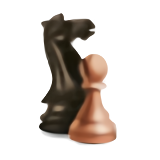

> RATING <
> PARTIJE <
--- BIJELI ---
Pobjede
Gubitci
Izjednačeno
--- CRNI ---
Pobjede
Gubitci
Izjednačeno
--- UKUPNO ---
Pobjede
Gubitci
Izjednačeno
> DOSTIGNUĆA <
 GM (International Correspondence Chess Grand Master) 2007
GM (International Correspondence Chess Grand Master) 2007
 SIM (Senior International Correspondence Chess Master) 2002
SIM (Senior International Correspondence Chess Master) 2002
 IM (International Correspondence Chess Master) 2001
IM (International Correspondence Chess Master) 2001

430 završenih partija
 98 pobjeda
98 pobjeda
 10554 povučenih poteza
10554 povučenih poteza
 39 odigranih turnira
39 odigranih turnira